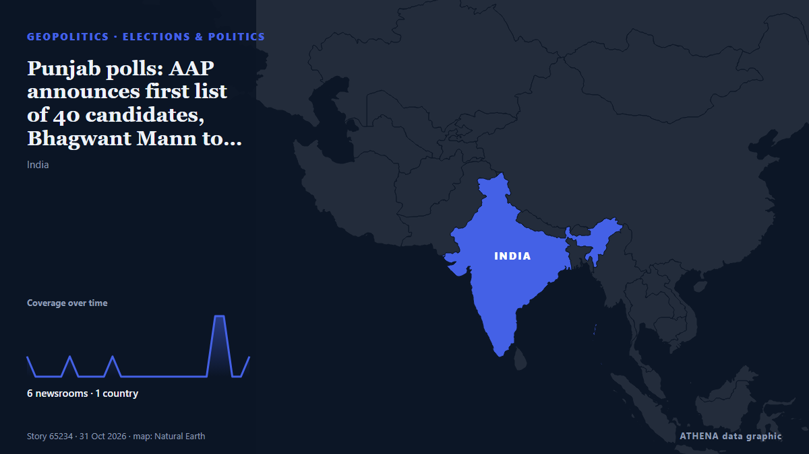

Punjab polls: AAP announces first list of 40 candidates, Bhagwant Mann to contest from Dhuri

State Industries Minister Sanjeev Arora, who is in jail in connection with an alleged money laundering case, has been renominated from Ludhiana West. από Scroll.in
Αναφέρθηκε ανεξάρτητα από 6 μέσα σε 1 χώρα από τις 30 Οκτ, πρώτο το NDTV· η κάλυψη κορυφώνεται. Το ATHENA δεν βρίσκει ενδείξεις κινδύνου στην κάλυψη. Βεβαιότητα 64% (μέτρια): το επιβεβαιώνουν 6 ανεξάρτητα μέσα, μέση αξιοπιστία 66%. Μέσα ανά χώρα: Ινδία (14). Κάλυψη: 30 Οκτ έως 1 Νοε, 51 ώρες.
Γιατί έχει σημασία: Οι εξελίξεις στην ασφάλεια και τη διπλωματία μπορούν να μετατοπίσουν συμμαχίες, εμπόριο και αγορές πολύ πέρα από τις χώρες που εμπλέκονται.
Τι άλλαξε: 4 νέες αναφορές από 3 μέσα στο 24ωρο έως 1 Νοε.
Πρώτη διατύπωση: Rs 250-Crore Drug Census In Punjab Sparks Row, BJP Seeks Data, AAP Hits Back
Οι τίτλοι των ειδήσεων παρουσιάζονται στα αγγλικά, όπως δημοσιεύτηκαν.
Με μια ματιά
Επιλέγεται, βαθμολογείται και γράφεται από τη δημοσιευμένη μεθοδολογία του ATHENA. Κανένας συντάκτης δεν παρεμβαίνει σε μεμονωμένα γεγονότα. Πώς παράγεται ›
| 30 Oct 08:04 UTC | 1 |
|---|---|
| 30 Oct 10:04 UTC | 0 |
| 30 Oct 12:04 UTC | 1 |
| 30 Oct 14:04 UTC | 0 |
| 30 Oct 16:04 UTC | 0 |
| 30 Oct 18:04 UTC | 1 |
| 30 Oct 20:04 UTC | 0 |
| 30 Oct 22:04 UTC | 0 |
| 31 Oct 00:04 UTC | 0 |
| 31 Oct 02:04 UTC | 0 |
| 31 Oct 04:04 UTC | 0 |
| 31 Oct 06:04 UTC | 6 |
| 31 Oct 08:04 UTC | 0 |
| 31 Oct 10:04 UTC | 1 |
| 31 Oct 12:04 UTC | 0 |
| 31 Oct 14:04 UTC | 1 |
| 31 Oct 16:04 UTC | 0 |
| 31 Oct 18:04 UTC | 0 |
| 31 Oct 20:04 UTC | 0 |
| 31 Oct 22:04 UTC | 0 |
| 01 Nov 00:04 UTC | 0 |
| 01 Nov 02:04 UTC | 0 |
| 01 Nov 04:04 UTC | 0 |
| 01 Nov 06:04 UTC | 1 |
| 01 Nov 08:04 UTC | 1 |
| 01 Nov 10:04 UTC | 1 |
Γιατί αυτοί οι αριθμοί
Σημασία
Κίνδυνος
Βεβαιότητα
Η κάλυψη — ποιος το ανέφερε και πότε
ο τίτλος όπως δημοσιεύτηκε · ανοίγει το πρωτότυπο- NDTV · ΙνδίαRs 250-Crore Drug Census In Punjab Sparks Row, BJP Seeks Data, AAP Hits Back
- Indian Express · ΙνδίαAAP’s first list of candidates for 2027 Punjab Assembly polls tomorrow
- NDTV · ΙνδίαAAP Claims Government Jobs Halting Punjab Migration, BJP Blames Visa Rules
- Indian Express · ΙνδίαBhagwant Mann, 39 others in AAP’s first list of candidates for Punjab election: Full list
- Times of India · ΙνδίαPunjab polls: AAP's first list out, CM Bhagwant Mann to fight from Dhuri again
- Hindustan Times · ΙνδίαAAP banks on sitting MLAs in first list, names 40 candidates for 2027 Punjab polls; CM Mann to contest from Dhuri
- NDTV · ΙνδίαAAP Names Candidates For 40 Seats In 2027 Punjab Assembly Polls: Full List
- Indian Express · ΙνδίαIn AAP’s first Punjab list, CM Mann fielded among 40 sitting MLAs, focus on Malwa
- The Hindu · ΙνδίαAAP releases first list of 40 candidates for 2027 Punjab Assembly election
- Scroll.in · ΙνδίαPunjab polls: AAP announces first list of 40 candidates, Bhagwant Mann to contest from Dhuri
- The Hindu · Ινδία‘Internal democracy’, not ‘rebellion’, NC says of 17 MLAs meeting over party affairs
- Indian Express · ΙνδίαRebellion in AAP in Punjab: 2 MLAs resign after first candidate list
- Times of India · ΙνδίαIn a big blow to AAP, 2 MLAs quit party after 1st candidate list announcement
- The Hindu · ΙνδίαPunjab polls: Two MLAs, including former Minister, quit AAP ahead of Assembly polls